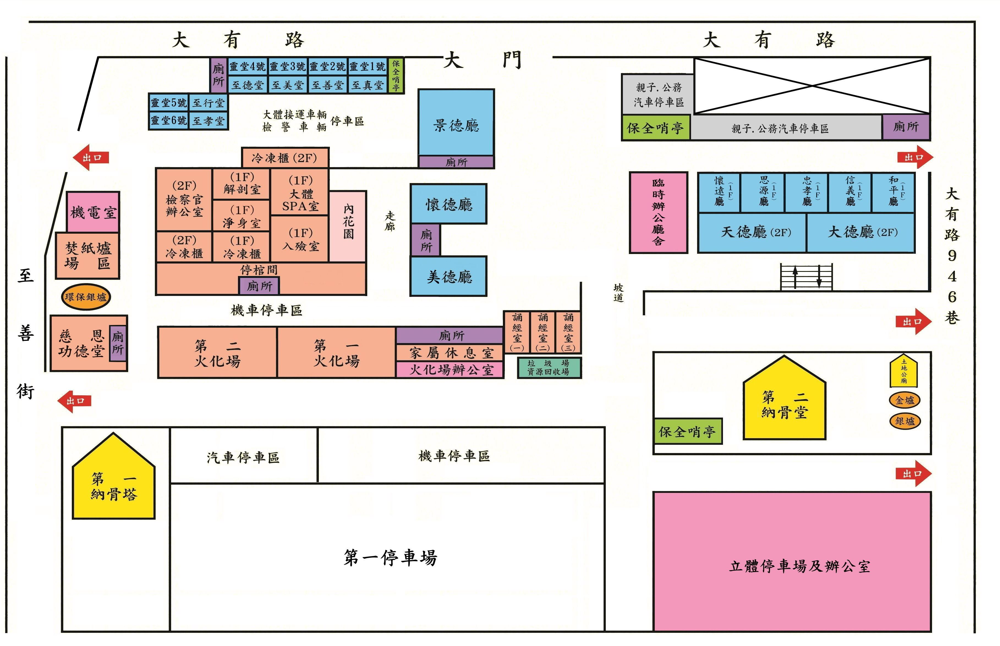
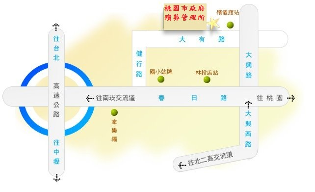

父愛長存 ‧ 德高望重
我最敬愛的父親
陳哲雄 先生
於家人們的陪伴與思念中，
圓滿塵世旅程，安祥辭世，
留下的溫暖與教誨，將永遠照亮我們。
謹擇於
民國 115 年 06 月 27 日（星期六），
於 桃園殯儀館
［景德廳］
舉辦追思告別奠禮
（ 點擊圖片或周圍可放大閱讀 ）
06.27
民國 115 年 ‧ 國曆六月廿七日（星期六）
告別式會場
桃園殯儀館
［景德廳］
320 桃園市桃園區大有路916號
家奠禮
14：30
公奠禮
15：30
平日安靈地點
喪宅
338 桃園市蘆竹區五福里中山路87巷1弄16號
親友平日可前往上香弔唁




⟨ 歲月長卷 ‧ 點選章節翻閱深情 ⟩
痛徹心髓：送別一生摯友與慈父
江城如夢，夜雨霖鈴。
慟聞春男伯父聞訊時的嚎啕大哭，
那穿透電話、穿透歲歲的悲慟，
瞬間將我徹底擊碎。
「你爸一生的辛苦我親眼看過，
我比任何人清楚。
我們八十多年的親情，
終於走到「天下沒有不散的宴席」，
我很難過，很不捨……」
春男伯父這字字啼血的回覆，
如同暮鼓寒鐘，
撞擊著晚輩乾涸的心淚。
八十載的春風秋雨，
兩條生命從蹣跚學步到白髮蒼蒼，
終究在命運的終點線前，
被硬生生扯斷了那一絲相連的氣息。
看著老人家老淚縱橫、
久久無法平復的悲愴，
我彷彿看見了世間最純粹的真情。
這不是尋常的客套，
這是兩個靈魂在人間歷劫、
相互依偎八十年的血淚交融。
十年生死兩茫茫，不思量，自難忘。
倘若蘇子對亡妻是「幽冥永隔」的孤寂，
那麼今日我對父親的離去，
以及春男伯父對摯友的送別，
便是「半身已歿」的撕裂。
父親，您走了。
走得那樣倉促，
將這人世間的風霜與未完緣分，
生生拋給了我們。
我枯坐在您慣常坐的椅子旁，
屋子裡似乎還殘留著您淡淡的氣息，
可任憑我如何呼喊、如何落淚，
那具曾為我們遮風擋雨的軀下，
再也不會傳來溫熱的叮嚀。
「十年生死兩茫茫，不思量，自難忘。孤墳遙望，無處話淒涼。」
蘇軾寫下此詞時，
是痛到極致後的麻木與清醒；
而我此時的悲愴，
是眼睜睜看著一個時代的落幕，
看著您一生「苦難與堅韌」的句點，
看到您為了那「一口氣」，
就是要努力求活的執著。
您這一生，過得太辛苦、太不易。
您用那粗糙的手掌、
用那寬闊卻漸漸駝下去的脊樑，
扛起了家庭的重擔，
在驚濤浪潮的歲月裡，
生生為我們劈開了一條生路。
您從不邀功，也從不抱怨，
那些深夜裡的嘆息、
那些獨自吞下的委屈，
我都看在眼裡，痛在心裡。
父親，謝謝您！
謝謝您用一生的勞碌，
換來了我們的安穩；
謝謝您用那毫無保留的父愛，
灌溉了我們五個小孩的生命。
這份恩情，重如泰山，深似灕江，
做兒女的，縱使燃盡此生，
亦無以為報。
如今您撒手人寰，
留給我的，是無邊無際的黑夜，
與再也無處安放的依恃。
赤足同行的歲月——青梅竹馬的「換帖」革命
在您那段充滿風雨的歲月裡，
最溫暖、最絢麗的一抹色彩，
莫過於與春男伯父
那段跨越八十年的換帖深情。
那是多代同宗的血緣，
更是命中注定的靈魂相契。
年齡相仿的你們，
從小赤著腳在泥濘的鄉間小路上奔跑。
上學時，共用橡皮、同讀一書；
逃學時，躲在密林深處聽蟬鳴，
看著天空分享少年的夢想。
那時候的感情，純粹得像汪清泉。
春男伯父家境殷實，
而我們家卻常在溫飽線上掙扎。
每當看到您挨餓，
春男伯父總是瞞著家裡，
偷偷摸摸地從懷裡掏出
溫熱的番薯、白米飯或點心，
塞進您的手裡。
那不只是一口食物，
那是危難之中的活命之恩，
是孩子對孩子最真摯的疼惜。
而您，父親，
您骨子裡流淌著頂天立地的血性。
您沒有金錢可以回報，
便握緊了那雙堅硬的拳頭。
只要有人敢欺負春男伯父，
您總是第一個衝上前去，
用身軀護他周全。
「你給我一餐飽食，我護你一生平安。」
這種在匱乏歲月裡建立的默契，
超越了物質的交換，
演變成了一種「命運共同體」的革命情感。
交女朋友時，交頭接耳，互相出主意，
在彼此青春留下了最荒唐也最美好的足跡。
那時的你們，何曾想過白髮蒼蒼的今日？
何曾想過死生契闊的永別？
商場浮沉，義字當頭—比親兄弟還親的脊樑
長大後，命運將你們推向不同軌道，
你們沒有選擇一起創業，
卻在各自的戰場上，
活成了彼此最堅實的後盾。
商場如戰場，爾虞我詐，利字當頭。
可在你們之間，從來只有一個「義」字。
當春男伯父遇到危機、
資金周轉不靈或決策迷茫時，
您總是毫不猶豫地挺身而出，
哪怕自己也身處險境，也絕不退縮半步。
而當我們家遭遇風雨時、商海浮沉時，
春男伯父的援手也從未遲到。
你們在無數個深夜裡對酌，
幾杯黃湯下肚，談驚濤駭浪，
談的更是對彼此的牽掛。
春男伯父常掛在嘴邊的一句話是：
「你爸爸，比我自己的親兄弟還要親。」
這句話，多麼沉重，又多麼滾燙！
在利慾薰心的現實世界裡，
兄弟鬩牆者有之，背信棄義者有之，
可你們卻把這份「麻吉兄弟」的感情，
淬鍊成了金石之堅。
你們是用一生的時間，
實踐著年少時在鄉野許下的諾言。
那是一種不需要言語的信任——
只要你需要，我隨時都在。
這種革命情感，在歲月的洗禮下，
早已模糊了家族與家庭的界線。
春男伯父的痛，
是因為他失去了唯一懂他過去、
參與他青春並肩作戰的戰友。
父親走了，春男伯父的後半生，
隨之缺了一角，再也無法填補。
相顧無言，唯有淚千行
「料得年年腸斷處，明月夜，短松岡。」
父親，當我把您離去的消息
告知春男伯父時，
電話那頭短暫的死寂，
隨後爆發出驚天動地的嚎啕大哭。
那一聲聲哭喊，撕心裂肺，
彷彿要把這八十年的歲月全哭碎。
老淚縱橫，不勝唏噓。
一個八十多歲的老人家，
在人生的暮年，
遭遇了最痛徹心扉的「生離死別」。
那種久久不能平復的悲慟，
是他對命運最無力的控訴。
他哭的是您一生的辛苦，
哭的是再也無法重聚的遺憾，
哭的是天下沒有不散的宴席。
我聽著那哭聲，淚水如決堤洪水。
我心疼父親您的離世，
更心疼春男伯父那孤單的身影。
兩位老人，一生傲骨，
卻在無常面前只能用眼淚送別。
季世之中，真的還有如此真情。
它沒有隨著時間流逝而淡化，
反而爆發出了最悲壯的光芒。
悲愴長歌，恭送永恆情誼
父親，您安心地走吧。
您這一生的辛苦，有人懂，有人疼，
有人為您落下了最真摯的老淚。
春男伯父那不捨的訊息，
便是您活在世上最好的墓誌銘。
您們的這段兄弟情，
將永遠鐫刻在晚輩的心中。
它讓我們相信，冷酷人間裡，
真的有一種感情叫「生死之交」；
有一種陪伴叫「八十載不離不棄」。
嗚呼哀哉！伏惟尚饗。
寒風颯颯，江水滔滔。
今日一別，幽冥兩隔。
父親，兒女在您的靈前長跪不起，
願您一路走好，脫離苦海。
春男伯父，請您節哀，
保重這風燭殘年的身體。
我父親在天之靈，
定會如當年揮舞拳頭那般護你。
「天下沒有不散的宴席」，
但您們留在人間的這段革命情感，
將如恆星般，永不熄滅。
父親，謝謝您，謝謝您的一生。兒女叩首，痛哭恭送。
 電話聯繫
電話聯繫
 LINE 諮詢
LINE 諮詢